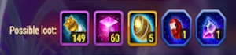

Este guia mostra uma abordagem coordenada para três jogadores a fim de completar o Mapa da Aventura #4 Queda da Cidade Celestial
em Hero Wars: Dominion Era. Siga as rotas designadas, capture juntos os pontos de reforço e destrua as torres-chave (19 e 21)
antes de enfrentar o chefe ele se torna muito mais fácil depois que essas torres são derrubadas.
Mapa de Aventura de Mascotes #4 – Queda da Cidade Celestial
- Número do mapa: 4
- Nome do mapa: Queda da Cidade Celestial
- Nível mínimo de herói: 55+
- Poder total recomendado: 61.000+
Este mapa se beneficia de jogo coordenado. Três jogadores devem assumir cada um uma das rotas pré-definidas (Azul / Amarelo / Verde).
Priorize capturar os pontos de reforço, depois destrua as torres na ordem de importância (torres que fortalecem o chefe primeiro).
Sempre espere pelos colegas de equipe nos pontos de reforço capturas disputadas ou avanços solo desperdiçam pontos de ação e colocam a tentativa em risco.
Detalhes do Mapa
Número do mapa: 4
Nome do mapa: Queda da Cidade Celestial
Nível de equipe recomendado: 55
Poder total de equipe recomendado: 61.000
Possíveis Recompensas
Completar o Mapa de Aventura #4 Queda da Cidade Celestial recompensa os jogadores com valiosos recursos de mascotes e materiais de aprimoramento.
Esses itens podem ajudar a fortalecer seus mascotes, desbloquear novos e aumentar o poder geral da sua guilda.
Abaixo está a lista completa de recompensas possíveis que você pode obter neste mapa.
Poção de Mascote: 149
Partícula do Caos: 60
Esfera de Invocação de Mascote: 5
Pedra Pato Incomum: Khorus, Cain
Pedra Aurora Incomum: Biscuit, Axel
Mapa #4 - Possíveis Recompensas

Fortalecimento do Chefe
O chefe no Mapa de Aventura #4 Queda da Cidade Celestial possui vários reforços poderosos que tornam a luta muito mais desafiadora.
Entender esses bônus é essencial para planejar sua estratégia, pois eles aumentam significativamente a sobrevivência e o potencial ofensivo do chefe.
Abaixo está a lista completa dos bônus que você enfrentará neste combate.
Bônus aplicados ao chefe neste mapa:
- Aumenta o dano causado em 25%
- Reduz o dano recebido em 25%
- Multiplica a vida por 10
- Aumenta o ganho de energia em 100%
- Reduz a duração de efeitos negativos em 80%
- Nenhum ataque pode causar mais de 1% da vida máxima do chefe
- Imune a habilidades que reduzem energia
Redução de Dano do Chefe (Mecânicas do Mapa)
Além dos bônus padrão, o chefe no Mapa de Aventura #4 possui mecânicas defensivas extras ligadas a torres específicas.
Essas torres concedem ao chefe uma resistência massiva a dano, tornando-o praticamente impossível de derrotar sem remover esses bônus antes.
Coordenar com sua equipe para destruir esses objetivos é crucial para uma tentativa bem-sucedida.
Resistência a Dano Reduz o dano recebido em 60%. Para remover este bônus do CHEFE, você deve derrotar os esquadrões correspondentes:
- Derrote o Esquadrão 19: Olho do Arauto para remover um bônus de 60% de resistência a dano do chefe.
- Derrote o Esquadrão 21: Olho do Arauto para remover o outro bônus de 60% de resistência a dano do chefe.
Importante: As torres 19 e 21 DEVEM ser destruídas antes de enfrentar o chefe para reduzir sua força.
Espere seus colegas destruírem essas torres não enfrente o chefe sozinho enquanto elas estiverem ativas.
Conclusão
O Mapa de Aventura #4 recompensa trabalho em equipe e sincronização.
Siga as rotas designadas (Azul / Amarelo / Verde), capture juntos os pontos de reforço
e priorize destruir as torres que fortalecem o chefe (especialmente as ligadas aos esquadrões 19 e 21).
Com comunicação, uso eficiente de pontos de ação e ataques coordenados, seu grupo pode vencer este mapa mesmo que esteja um pouco abaixo do poder total recomendado.
Após algumas tentativas, ajuste as rotas para combinar com os heróis e estratégias da sua guilda às vezes, trocar quem faz cada caminho
com base nos heróis e patronagens de mascotes disponíveis melhora bastante a taxa de sucesso.
Boa sorte coordene, comunique e conquiste a Cidade Celestial!
Guia preparado por Alexandre Games adapte-o à sua equipe e estilo de jogo conforme necessário.

 Mapa de Aventura de Mascotes #2 - Guia do Vale dos Elementos
Mapa de Aventura de Mascotes #2 - Guia do Vale dos Elementos
 Mapa de Aventura de Mascotes #5 – Cerco a Strongford
Mapa de Aventura de Mascotes #5 – Cerco a Strongford
 Mapa de Aventura de Mascotes #6 - Hero Wars: Dominion Era
Mapa de Aventura de Mascotes #6 - Hero Wars: Dominion Era
 Mapa de Aventura de Mascotes #7 - Hero Wars: Dominion Era
Mapa de Aventura de Mascotes #7 - Hero Wars: Dominion Era
 Mapa de Aventura de Mascotes #8 – Queda da Cidade Celestial
Mapa de Aventura de Mascotes #8 – Queda da Cidade Celestial